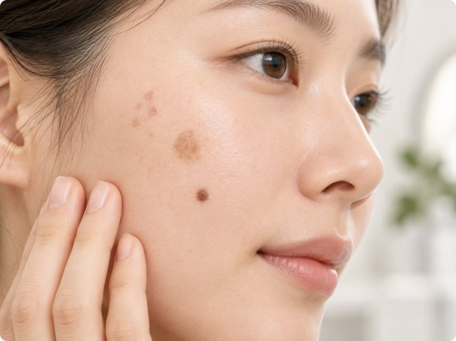

![편평사마귀 vs 검버섯 vs 점 — 구분하는 법[후한의원 전주점]](../assets/images/doctor-heo.jpg)
얼굴에 생긴 작은 돌기, 편평사마귀·검버섯·점 어떻게 구분할까요?
얼굴에 갑자기 작은 돌기나 색소성 병변이 생기면 가장 먼저 “이게 편평사마귀일까, 검버섯일까, 점일까?”라는 궁금증이 생길 수 있습니다.
편평사마귀, 검버섯, 점은 모두 얼굴에 나타날 수 있지만 발생 원인과 특징, 치료 방법에는 차이가 있습니다. 특히 비슷하게 보이는 피부 병변은 겉모습만으로 정확하게 구분하기 어려울 수 있기 때문에 섣불리 자가 진단하거나 제거하기보다는 피부 상태를 확인하는 것이 중요합니다.
이번 글에서는 편평사마귀와 검버섯, 점의 차이를 원인과 외형, 발생 양상, 전염성 등을 기준으로 알아보겠습니다. 전주에서 얼굴에 갑자기 늘어난 작은 돌기 때문에 고민하고 있다면 전주편평사마귀 한의원에서 상담을 받아보는 것도 방법이 될 수 있습니다.

편평사마귀는 HPV 감염으로 발생합니다
편평사마귀는 인유두종바이러스(HPV) 감염과 관련된 피부 질환입니다. 바이러스가 피부에 감염되면서 작은 편평한 형태의 병변이 나타날 수 있습니다.
편평사마귀에서 눈여겨볼 특징 중 하나는 여러 개가 군집해 나타나거나 시간이 지나면서 주변으로 늘어나는 양상입니다.
- 얼굴에 여러 개가 함께 나타날 수 있습니다.
- 대체로 작은 크기의 편평하거나 살짝 융기된 형태입니다.
- 갈색 또는 살색을 띠는 경우가 있습니다.
- 경우에 따라 가려움 등의 증상이 동반될 수 있습니다.
- 바이러스성 질환이므로 접촉이나 피부 손상 등을 통해 다른 부위로 퍼질 가능성이 있습니다.
특히 손으로 반복해서 만지거나 긁는 행동은 피부 자극을 증가시키고 병변이 주변으로 확산되는 데 영향을 줄 수 있어 주의가 필요합니다.
검버섯은 자외선과 피부 노화의 영향을 받습니다
일상적으로 검버섯이라고 부르는 병변에는 검버섯(지루각화증)이나 노인성 색소반 등 서로 다른 질환이 포함될 수 있습니다. 따라서 정확한 명칭과 상태는 피부 진찰을 통해 구분하는 것이 좋습니다.
일반적으로 자외선 노출과 연령 증가의 영향을 받는 색소성 병변은 얼굴, 목, 손등 등 햇빛에 자주 노출되는 부위에서 발견되는 경우가 많습니다.
- 갈색에서 짙은 갈색 또는 검은색으로 보일 수 있습니다.
- 병변의 형태와 표면은 종류에 따라 다를 수 있습니다.
- 지루각화증은 표면이 거칠거나 두꺼워진 것처럼 보일 수 있습니다.
- 노인성 색소반은 비교적 편평한 형태로 나타날 수 있습니다.
- 바이러스 감염에 의한 병변이 아니므로 전염성은 없습니다.
따라서 “검버섯은 모두 같은 모양이다”라고 생각하기보다는 색과 표면, 크기, 발생 부위 등을 종합적으로 확인하는 것이 중요합니다.
점은 멜라닌세포와 관련된 색소성 병변입니다
점은 흔하게 볼 수 있는 피부 병변으로, 멜라닌세포 또는 모반세포와 관련되어 발생합니다. 색과 크기, 모양은 사람마다 다양하게 나타날 수 있습니다.
- 갈색, 검은색, 살색 등 다양한 색으로 나타날 수 있습니다.
- 동그랗거나 타원형으로 보이는 경우가 많습니다.
- 평평한 형태부터 약간 볼록한 형태까지 다양합니다.
- 경계가 비교적 명확한 경우가 많습니다.
대부분의 점은 오랜 기간 큰 변화 없이 유지되지만, 기존에 있던 점의 크기·색·모양이 갑자기 변하거나 출혈, 반복적인 딱지, 통증 등의 변화가 나타난다면 단순한 점으로 단정하지 말고 의료진의 진료를 받아보는 것이 좋습니다.
편평사마귀·검버섯·점 차이 한눈에 비교하기
- 편평사마귀: HPV 감염과 관련되며 여러 개가 군집하거나 주변으로 늘어날 수 있습니다.
- 검버섯: 자외선과 연령 등의 영향을 받으며, 병변의 종류에 따라 편평하거나 표면이 두꺼워진 형태로 나타날 수 있습니다.
- 점: 멜라닌세포 및 모반세포와 관련된 흔한 색소성 병변으로 모양과 색이 다양합니다.
겉으로 비슷해 보여도 원인이 서로 다르기 때문에 병변의 개수, 크기, 색, 표면, 발생 시점과 변화 양상을 함께 살펴보는 것이 중요합니다.
얼굴의 작은 돌기를 사진만으로 구분하기 어려운 이유
초기 편평사마귀는 작은 점이나 색소성 병변처럼 보일 수 있고, 반대로 다른 피부 병변이 편평사마귀와 비슷하게 보이는 경우도 있습니다.
따라서 인터넷에서 찾은 사진과 자신의 병변을 단순 비교해 자가 진단하는 데에는 한계가 있습니다. 필요에 따라 의료진의 육안 관찰과 더모스코피(피부확대경 검사) 등을 활용해 병변의 특징을 확인할 수 있습니다.
전주에서 편평사마귀가 의심된다면 무엇을 확인해야 할까요?
얼굴에 작은 돌기가 갑자기 여러 개 생겼거나 시간이 지나면서 개수가 늘어나고 있다면 편평사마귀 여부를 확인해볼 필요가 있습니다.
특히 병변을 손으로 계속 만지거나 긁기보다는 현재 상태를 관찰하면서 의료기관에서 정확한 진단을 받는 것이 좋습니다. 전주편평사마귀 한의원을 알아보고 있다면 치료 방법뿐 아니라 현재 나타난 병변이 실제로 편평사마귀에 해당하는지 먼저 상담받는 것이 중요합니다.
전주편평사마귀 한의원을 선택할 때에도 단순히 병변을 제거하는 것만 생각하기보다는 병변의 형태와 발생 양상, 피부 상태 등을 종합적으로 확인하고 자신에게 적합한 치료 계획을 상담하는 것이 좋습니다.
편평사마귀인지 검버섯인지 점인지 헷갈린다면
얼굴에 생긴 작은 돌기 하나만 보고 편평사마귀, 검버섯, 점을 정확하게 구분하기는 쉽지 않습니다. 특히 갑자기 생겼거나 개수가 증가하고 있는 병변, 기존 병변과 다른 변화가 나타난 병변은 의료진의 진찰을 받아보는 것이 좋습니다.
무엇보다 중요한 것은 자가 진단으로 병변을 억지로 제거하거나 반복해서 자극하지 않는 것입니다.
전주에서 얼굴의 작은 돌기나 편평사마귀가 의심되는 병변으로 고민하고 있다면 전주편평사마귀 한의원에서 현재 피부 상태에 대한 상담을 받아보시기 바랍니다. 정확한 상태를 확인하는 것이 적절한 관리와 치료 방법을 결정하는 첫 단계가 될 수 있습니다.